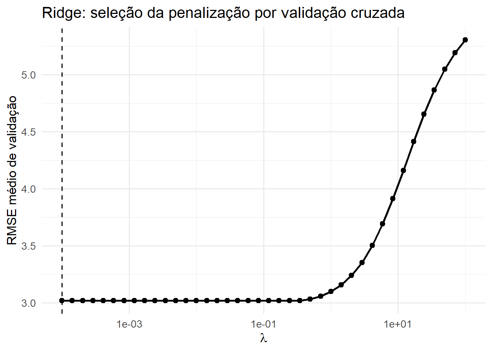
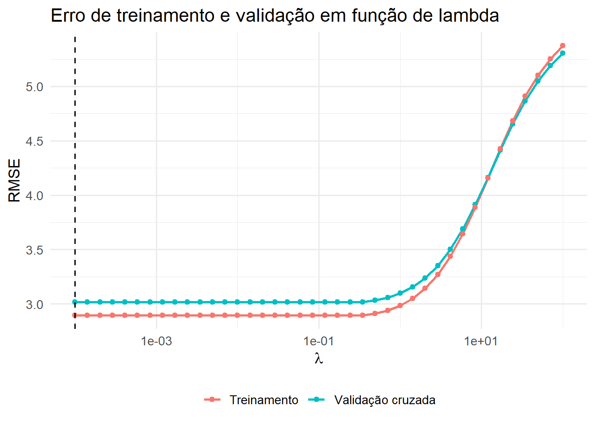
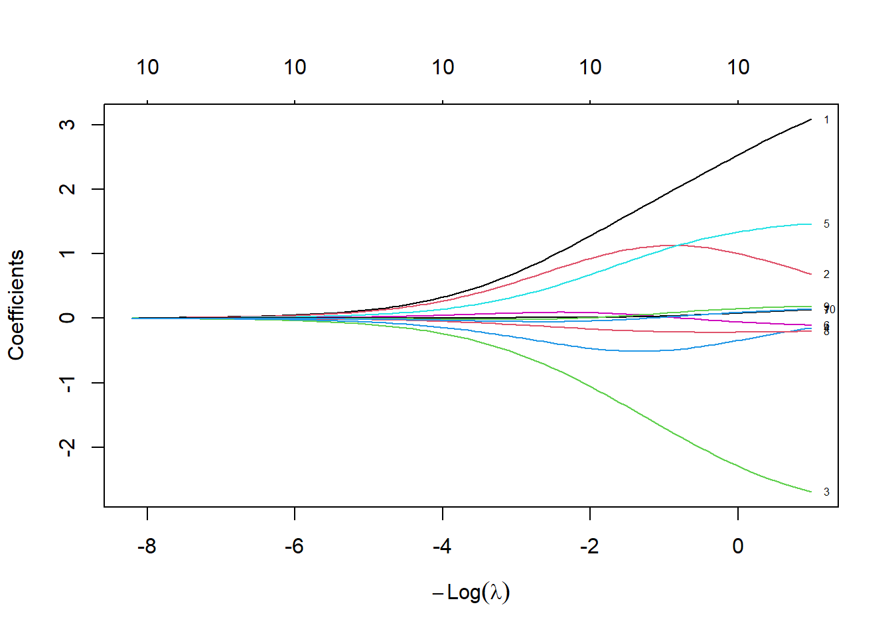
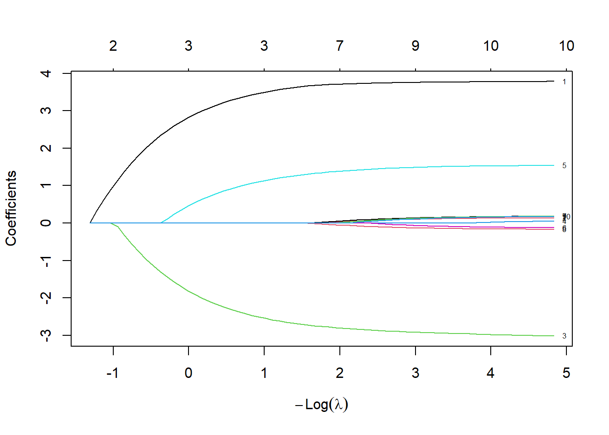

library(tidyverse)
library(tidymodels)
library(glmnet)
tidymodels_prefer()Aplicação prática: generalização e regularização
Material complementar — A1
1 Objetivo
Este material apresenta, de forma prática, um fluxo completo para os conceitos estudados até aqui em Métodos Estatísticos para Machine Learning:
\[ \text{dados} \rightarrow \text{treino/teste} \rightarrow \text{validação cruzada} \rightarrow \text{OLS} \rightarrow \text{Ridge/Lasso} \rightarrow \text{seleção de }\lambda \rightarrow \text{avaliação final} \]
Este material serve de material de apoio para a realização da atividade avaliativa A1. O exemplo deve servir como referência para compreender a lógica dos procedimentos e sua implementação em R.
2 Pacotes
3 Uma base simulada para estudo
Vamos construir uma situação em que existem vários preditores, alguns correlacionados e apenas parte deles possui relação relevante com a resposta.
set.seed(335)
n <- 250
x1 <- rnorm(n)
x2 <- 0.85 * x1 + rnorm(n, sd = 0.5)
x3 <- rnorm(n)
x4 <- 0.70 * x3 + rnorm(n, sd = 0.7)
x5 <- rnorm(n)
x6 <- rnorm(n)
x7 <- rnorm(n)
x8 <- rnorm(n)
x9 <- rnorm(n)
x10 <- rnorm(n)
y <- 5 + 4.0 * x1 - 3.0 * x3 + 1.5 * x5 + rnorm(n, sd = 3)
dados <- tibble(y, x1, x2, x3, x4, x5, x6, x7, x8, x9, x10)
glimpse(dados)Rows: 250
Columns: 11
$ y <dbl> 2.0740800, -0.1639119, -3.4105041, 3.6719881, 4.8168113, 7.3800608…
$ x1 <dbl> -0.9968683, -0.4906339, -1.7339704, -0.4756294, 0.9548314, -0.9822…
$ x2 <dbl> -1.8047321, -0.9845742, -2.1658846, -0.4910842, 0.3702844, -1.5519…
$ x3 <dbl> 0.0245880, 0.3811474, -1.2118724, -1.0065867, 0.8525864, -1.134494…
$ x4 <dbl> 0.10415275, 0.83709050, 0.11490171, -0.29466776, -0.05355908, -0.0…
$ x5 <dbl> -0.95165781, 0.53070367, -1.84697841, -0.39964640, -0.51124194, 0.…
$ x6 <dbl> -0.43819266, -0.14543692, -1.66437665, -1.86415125, 1.41940865, 0.…
$ x7 <dbl> 0.24894803, -0.43217422, 0.18708900, -0.85297608, -0.83170634, -1.…
$ x8 <dbl> -0.72413869, -0.48376888, -0.26029606, -1.49892417, 0.97545750, -0…
$ x9 <dbl> 0.04975384, -2.72538495, 0.46255757, 0.23301456, 1.34288734, 0.662…
$ x10 <dbl> 0.39064112, -0.62342613, 1.11058964, 1.22066994, 0.65087919, 0.030…Observe que, na simulação, conhecemos o mecanismo gerador. Em uma aplicação real isso não acontece.
4 Treinamento, validação e teste
Uma separação importante deve ser feita desde o início:
\[ \mathcal{D} = \mathcal{D}_{treino} \cup \mathcal{D}_{teste} \]
O conjunto de treinamento é utilizado para construir o modelo. O conjunto de teste é reservado para a avaliação final.
set.seed(335)
split <- initial_split(
dados,
prop = 0.80
)
treino <- training(split)
teste <- testing(split)
dim(treino)[1] 200 11dim(teste)[1] 50 11
Importante
O conjunto de teste não deve ser utilizado para escolher o modelo ou seus hiperparâmetros. Se fizermos isso, ele deixa de representar uma avaliação verdadeiramente externa do procedimento de modelagem.
5 Validação cruzada
Dentro do conjunto de treinamento, criaremos 10 partições:
set.seed(335)
folds <- vfold_cv(
treino,
v = 10
)
folds# 10-fold cross-validation
# A tibble: 10 × 2
splits id
<list> <chr>
1 <split [180/20]> Fold01
2 <split [180/20]> Fold02
3 <split [180/20]> Fold03
4 <split [180/20]> Fold04
5 <split [180/20]> Fold05
6 <split [180/20]> Fold06
7 <split [180/20]> Fold07
8 <split [180/20]> Fold08
9 <split [180/20]> Fold09
10 <split [180/20]> Fold10Em cada iteração, aproximadamente nove partes são utilizadas para ajuste e uma parte para validação.
A ideia é estimar o desempenho esperado do procedimento sem utilizar o conjunto de teste.
6 Modelo de referência: mínimos quadrados
Inicialmente ajustamos
\[ Y=\beta_0+\beta_1X_1+\cdots+\beta_pX_p+\varepsilon \]
sem regularização.
modelo_ols <-
linear_reg() |>
set_engine("lm")
receita_ols <-
recipe(y ~ ., data = treino)
wf_ols <-
workflow() |>
add_recipe(receita_ols) |>
add_model(modelo_ols)6.1 Erro de treinamento
ajuste_ols <- fit(wf_ols, data = treino)
pred_treino_ols <-
predict(ajuste_ols, treino) |>
bind_cols(treino |> select(y))
rmse_treino_ols <-
pred_treino_ols |>
rmse(truth = y, estimate = .pred)
rmse_treino_ols# A tibble: 1 × 3
.metric .estimator .estimate
<chr> <chr> <dbl>
1 rmse standard 2.86O erro de treinamento mede o ajuste aos próprios dados utilizados na estimação. Por isso, ele tende a ser otimista como medida de desempenho futuro.
6.2 Erro por validação cruzada
set.seed(335)
cv_ols <-
fit_resamples(
wf_ols,
resamples = folds,
metrics = metric_set(rmse),
control = control_resamples(save_pred = TRUE)
)
collect_metrics(cv_ols)# A tibble: 1 × 6
.metric .estimator mean n std_err .config
<chr> <chr> <dbl> <int> <dbl> <chr>
1 rmse standard 3.01 10 0.161 pre0_mod0_post0Agora possuímos uma estimativa de desempenho calculada em observações que, em cada fold, não participaram do ajuste.
7 Por que regularizar?
Considere a função objetivo dos mínimos quadrados:
\[ RSS(\boldsymbol{\beta}) = \sum_{i=1}^{n} \left( y_i-\beta_0-\sum_{j=1}^{p}\beta_jx_{ij} \right)^2 \]
Ridge e Lasso acrescentam uma penalização.
Para Ridge:
\[ RSS(\boldsymbol{\beta}) + \lambda\sum_{j=1}^{p}\beta_j^2 \]
Para Lasso:
\[ RSS(\boldsymbol{\beta}) + \lambda\sum_{j=1}^{p}|\beta_j| \]
O parâmetro \(\lambda\) controla o compromisso entre ajuste e complexidade.
Quando
\[ \lambda=0 \]
não existe penalização. À medida que \(\lambda\) aumenta, coeficientes maiores passam a ser mais penalizados.
8 Ridge
No tidymodels, o hiperparâmetro \(\lambda\) é chamado de penalty.
modelo_ridge <-
linear_reg(
penalty = tune(),
mixture = 0
) |>
set_engine("glmnet")No glmnet:
mixture = 0corresponde a Ridgemixture = 1corresponde a Lasso
8.1 Padronização
A penalização depende da escala das variáveis. Por isso, padronizamos os preditores:
receita_reg <-
recipe(y ~ ., data = treino) |>
step_normalize(all_predictors())
Nota
A receita é estimada dentro de cada amostra de treinamento da validação cruzada. Assim, as médias e desvios-padrão utilizados na padronização não são calculados utilizando previamente os dados de validação ou teste.
8.2 Workflow
wf_ridge <-
workflow() |>
add_recipe(receita_reg) |>
add_model(modelo_ridge)9 Construindo a grade de \(\lambda\)
É útil investigar várias ordens de grandeza.
grade_lambda <-
grid_regular(
penalty(range = c(-4, 2)),
levels = 40
)
grade_lambda# A tibble: 40 × 1
penalty
<dbl>
1 0.0001
2 0.000143
3 0.000203
4 0.000289
5 0.000412
6 0.000588
7 0.000838
8 0.00119
9 0.00170
10 0.00242
# ℹ 30 more rows
Nota
No objeto penalty(), o intervalo é especificado em escala \(\log_{10}\). Assim, c(-4, 2) produz valores de \(\lambda\) aproximadamente entre \(10^{-4}\) e \(10^2\).
10 Selecionando \(\lambda\) por validação cruzada
set.seed(335)
tuning_ridge <-
tune_grid(
wf_ridge,
resamples = folds,
grid = grade_lambda,
metrics = metric_set(rmse),
control = control_grid(save_pred = TRUE)
)Podemos visualizar os resultados:
resultados_ridge <-
collect_metrics(tuning_ridge) |>
filter(.metric == "rmse")
resultados_ridge |>
select(penalty, mean, std_err) |>
arrange(penalty)# A tibble: 40 × 3
penalty mean std_err
<dbl> <dbl> <dbl>
1 0.0001 3.02 0.168
2 0.000143 3.02 0.168
3 0.000203 3.02 0.168
4 0.000289 3.02 0.168
5 0.000412 3.02 0.168
6 0.000588 3.02 0.168
7 0.000838 3.02 0.168
8 0.00119 3.02 0.168
9 0.00170 3.02 0.168
10 0.00242 3.02 0.168
# ℹ 30 more rowsO melhor valor segundo o menor RMSE médio de validação é:
melhor_ridge <-
select_best(
tuning_ridge,
metric = "rmse"
)
melhor_ridge# A tibble: 1 × 2
penalty .config
<dbl> <chr>
1 0.0001 pre0_mod01_post0Esse é o ponto essencial:
\(\lambda\) foi escolhido pela validação cruzada realizada no conjunto de treinamento, e não pelo conjunto de teste.
11 Curva do erro de validação
ggplot(
resultados_ridge,
aes(x = penalty, y = mean)
) +
geom_line(linewidth = 1) +
geom_point(size = 2) +
geom_vline(
xintercept = melhor_ridge$penalty,
linetype = 2
) +
scale_x_log10() +
labs(
x = expression(lambda),
y = "RMSE médio de validação",
title = "Ridge: seleção da penalização por validação cruzada"
) +
theme_minimal(base_size = 13)
O gráfico mostra que, para valores pequenos de \(\lambda\), o RMSE médio de validação permanece praticamente constante e próximo de 3,0, indicando que uma penalização fraca pouco altera o desempenho preditivo do modelo Ridge. A linha tracejada identifica o valor de \(\lambda\) selecionado pela validação cruzada, localizado na região de penalização muito baixa, onde o RMSE é mínimo. À medida que \(\lambda\) aumenta, especialmente a partir de valores próximos de \(1\), o erro de validação cresce de forma acentuada. Isso indica que uma regularização excessiva encolhe demasiadamente os coeficientes, tornando o modelo pouco flexível e aumentando seu viés, caracterizando subajuste (underfitting). Portanto, neste exemplo, os dados fornecem pouca evidência de que uma penalização Ridge intensa melhore a capacidade de generalização; o melhor desempenho ocorre com uma regularização bastante pequena.
12 Erro de treinamento para cada \(\lambda\)
Para compreender o compromisso entre ajuste e generalização, também podemos calcular o erro de treinamento ao longo da grade.
ridge_train_rmse <-
map_dfr(
grade_lambda$penalty,
function(lambda) {
modelo <-
linear_reg(
penalty = lambda,
mixture = 0
) |>
set_engine("glmnet")
wf <-
workflow() |>
add_recipe(receita_reg) |>
add_model(modelo)
ajuste <- fit(wf, data = treino)
predict(ajuste, treino) |>
bind_cols(treino |> select(y)) |>
rmse(truth = y, estimate = .pred) |>
transmute(
penalty = lambda,
rmse_treino = .estimate
)
}
)Agora combinamos treinamento e validação:
ridge_plot <-
resultados_ridge |>
select(
penalty,
rmse_validacao = mean
) |>
left_join(
ridge_train_rmse,
by = "penalty"
) |>
pivot_longer(
cols = starts_with("rmse_"),
names_to = "amostra",
values_to = "rmse"
) |>
mutate(
amostra = recode(
amostra,
rmse_treino = "Treinamento",
rmse_validacao = "Validação cruzada"
)
)ggplot(
ridge_plot,
aes(
x = penalty,
y = rmse,
color = amostra
)
) +
geom_line(linewidth = 1) +
geom_point(size = 1.8) +
geom_vline(
xintercept = melhor_ridge$penalty,
linetype = 2
) +
scale_x_log10() +
labs(
x = expression(lambda),
y = "RMSE",
color = NULL,
title = "Erro de treinamento e validação em função de lambda"
) +
theme_minimal(base_size = 13) +
theme(legend.position = "bottom")
Este segundo gráfico deixa ainda mais claro o efeito da regularização. Para valores pequenos de \(\lambda\), os erros permanecem praticamente constantes, com o RMSE de treinamento inferior ao RMSE de validação cruzada, como esperado, pois o modelo é ajustado diretamente aos dados de treinamento. Nessa região, aumentar ligeiramente a penalização praticamente não altera o desempenho. A partir de determinado valor de \(\lambda\), entretanto, os dois erros passam a crescer rapidamente e de maneira semelhante, indicando que a penalização está restringindo excessivamente os coeficientes e reduzindo a flexibilidade do modelo. É importante observar que não aparece neste exemplo a queda inicial do erro de validação que frequentemente associamos ao benefício da regularização: o menor RMSE de validação ocorre com \(\lambda\) muito pequeno, indicado pela linha tracejada. Portanto, a regularização Ridge praticamente não melhora a generalização nesta base; penalizações maiores apenas aumentam o viés e conduzem ao subajuste (underfitting).
12.1 Como interpretar?
À medida que \(\lambda\) aumenta, impomos uma restrição maior aos coeficientes.
O erro de treinamento não precisa melhorar. Na realidade, ao restringirmos o modelo, estamos deliberadamente aceitando algum aumento de viés.
Entretanto, uma quantidade moderada de regularização pode reduzir a variância e melhorar o desempenho em novas observações.
Esse é o compromisso entre
\[ \text{viés} \qquad\text{e}\qquad \text{variância} \]
que está por trás da regularização.
13 Trajetória dos coeficientes Ridge
Podemos visualizar diretamente o efeito de \(\lambda\).
x_treino <- treino |> select(-y) |> as.matrix()
y_treino <- treino$y
fit_ridge_path <-
glmnet(
x_treino,
y_treino,
alpha = 0,
standardize = TRUE
)
plot(
fit_ridge_path,
xvar = "lambda",
label = TRUE
)
O gráfico mostra como os coeficientes estimados pelo modelo Ridge se modificam à medida que a intensidade da regularização varia. Cada curva representa o coeficiente associado a uma das variáveis preditoras.
Atenção à escala do eixo horizontal
O eixo horizontal está representado por \(-\log(\lambda)\). Portanto, sua leitura é inversa em relação à intensidade da penalização:
\[ -\log(\lambda) \uparrow \quad\Longrightarrow\quad \lambda \downarrow \quad\Longrightarrow\quad \text{penalização} \downarrow \]
Assim, da esquerda para a direita, a penalização diminui e o modelo se torna progressivamente menos regularizado.
Na região esquerda do gráfico, os valores de \(\lambda\) são maiores. A penalização
\[ \lambda\sum_{j=1}^{p}\beta_j^2 \]
possui, portanto, maior influência sobre a função objetivo, fazendo com que os coeficientes sejam fortemente encolhidos em direção a zero.
À medida que caminhamos para a direita, \(\lambda\) diminui e a penalização se torna progressivamente mais fraca. Como consequência, os coeficientes podem se afastar de zero e aproximar-se das estimativas obtidas pelo método dos mínimos quadrados.
Em particular,
\[ \lambda \rightarrow 0 \quad\Longrightarrow\quad \widehat{\boldsymbol{\beta}}^{Ridge} \rightarrow \widehat{\boldsymbol{\beta}}^{OLS} \]
Portanto, o gráfico pode ser interpretado esquematicamente como
\[ \boxed{ \text{forte regularização} \quad\longrightarrow\quad \text{fraca regularização} } \]
quando percorremos o eixo horizontal da esquerda para a direita.
O que representam os números no topo?
Os números apresentados na parte superior indicam o número de coeficientes ativos no modelo. No Ridge, todas as variáveis permanecem no modelo, mesmo quando seus coeficientes se tornam muito pequenos. Por isso, neste exemplo, o valor permanece igual a 10 ao longo de toda a trajetória.
Uma característica fundamental do Ridge é justamente que seus coeficientes são encolhidos (shrinkage) em direção a zero, mas, em geral, não se tornam exatamente iguais a zero.
Assim,
\[ \text{Ridge} \quad\Longrightarrow\quad \text{encolhimento dos coeficientes} \quad\neq\quad \text{seleção de variáveis} \]
Essa característica será importante na comparação com o Lasso, cuja penalização \(L_1\) pode produzir coeficientes exatamente iguais a zero e, consequentemente, realizar seleção de variáveis.
O objetivo da regularização não é simplesmente produzir coeficientes menores. Ao restringir suas magnitudes, o Ridge reduz a flexibilidade do modelo e pode diminuir sua variância, melhorando sua capacidade de generalização.
Entretanto, uma regularização excessiva pode aumentar demasiadamente o viés e produzir subajuste (underfitting). Por isso, a intensidade da penalização não deve ser escolhida visualmente a partir da trajetória dos coeficientes: o valor de \(\lambda\) deve ser selecionado por um procedimento de validação, como a validação cruzada.
14 Lasso
Agora mudamos apenas a natureza da penalização:
modelo_lasso <-
linear_reg(
penalty = tune(),
mixture = 1
) |>
set_engine("glmnet")
wf_lasso <-
workflow() |>
add_recipe(receita_reg) |>
add_model(modelo_lasso)15 Selecionando \(\lambda\) para o Lasso
set.seed(335)
tuning_lasso <-
tune_grid(
wf_lasso,
resamples = folds,
grid = grade_lambda,
metrics = metric_set(rmse)
)
melhor_lasso <-
select_best(
tuning_lasso,
metric = "rmse"
)
melhor_lasso# A tibble: 1 × 2
penalty .config
<dbl> <chr>
1 0.242 pre0_mod23_post0Novamente:
\[ \lambda^\ast = \arg\min_{\lambda} \widehat{R}_{CV}(\lambda) \]
O conjunto de teste ainda não foi utilizado.
16 Trajetória dos coeficientes Lasso
fit_lasso_path <-
glmnet(
x_treino,
y_treino,
alpha = 1,
standardize = TRUE
)
plot(
fit_lasso_path,
xvar = "lambda",
label = TRUE
)
O gráfico apresenta a trajetória dos coeficientes estimados pelo Lasso à medida que a intensidade da regularização varia. Cada curva corresponde ao coeficiente associado a uma variável preditora.
Assim como no gráfico anterior, o eixo horizontal é representado por \(-\log(\lambda)\). Portanto,
\[ -\log(\lambda)\uparrow \quad\Longrightarrow\quad \lambda\downarrow \quad\Longrightarrow\quad \text{penalização}\downarrow \]
Consequentemente, a leitura do gráfico da esquerda para a direita corresponde à passagem de modelos mais fortemente regularizados para modelos progressivamente menos regularizados.
Na região esquerda, \(\lambda\) é relativamente grande e a penalização
\[ \lambda\sum_{j=1}^{p}|\beta_j| \]
exerce forte influência sobre a estimação. Como consequência, vários coeficientes são estimados exatamente como zero.
À medida que \(\lambda\) diminui, caminhando para a direita, a penalização se torna mais fraca e novas variáveis passam a apresentar coeficientes diferentes de zero. Simultaneamente, os coeficientes já ativos podem aumentar sua magnitude.
O que diferencia o Lasso do Ridge?
No Ridge, o aumento da penalização provoca o encolhimento dos coeficientes em direção a zero, mas, em geral, todos permanecem diferentes de zero.
No Lasso, a penalização \(L_1\) permite que alguns coeficientes sejam exatamente iguais a zero.
Assim,
\[ \boxed{ \text{Lasso} = \text{encolhimento} + \text{seleção de variáveis} } \]
16.1 Número de variáveis ativas
Os números apresentados na parte superior do gráfico indicam o número de coeficientes diferentes de zero para diferentes valores da penalização.
Neste exemplo, observamos a sequência aproximada
\[ 2 \rightarrow 3 \rightarrow 3 \rightarrow 7 \rightarrow 9 \rightarrow 10 \rightarrow 10 \]
à medida que caminhamos da esquerda para a direita.
Isso mostra diretamente o efeito de seleção de variáveis produzido pelo Lasso:
- com penalização mais forte, apenas poucas variáveis permanecem no modelo
- quando \(\lambda\) diminui, outras variáveis passam a apresentar coeficientes diferentes de zero
- com penalização suficientemente fraca, as 10 variáveis estão presentes no modelo
Portanto,
\[ \lambda\uparrow \quad\Longrightarrow\quad \text{maior regularização} \quad\Longrightarrow\quad \text{modelo mais esparso} \]
enquanto
\[ \lambda\downarrow \quad\Longrightarrow\quad \text{menor regularização} \quad\Longrightarrow\quad \text{mais variáveis ativas} \]
Atenção
O fato de uma variável possuir coeficiente diferente de zero não significa automaticamente que ela seja importante ou que deva permanecer no modelo final.
O valor de \(\lambda\) não deve ser escolhido observando apenas quantas variáveis foram selecionadas. Assim como no Ridge, a intensidade da penalização deve ser determinada utilizando um critério de validação, como o RMSE obtido por validação cruzada.
Esse comportamento permite visualizar uma das principais vantagens do Lasso: além de controlar a complexidade por meio do encolhimento dos coeficientes, ele pode produzir uma representação esparsa, utilizando apenas um subconjunto das variáveis disponíveis.
17 Quais variáveis foram selecionadas?
Finalizamos o workflow com o melhor \(\lambda\):
wf_lasso_final <-
finalize_workflow(
wf_lasso,
melhor_lasso
)
ajuste_lasso <-
fit(
wf_lasso_final,
data = treino
)
coef_lasso <-
ajuste_lasso |>
extract_fit_parsnip() |>
tidy()
coef_lasso# A tibble: 11 × 3
term estimate penalty
<chr> <dbl> <dbl>
1 (Intercept) 5.14 0.242
2 x1 3.66 0.242
3 x2 0 0.242
4 x3 -2.68 0.242
5 x4 0 0.242
6 x5 1.22 0.242
7 x6 0 0.242
8 x7 0 0.242
9 x8 0 0.242
10 x9 0 0.242
11 x10 0 0.242Para identificar os coeficientes ativos:
coef_lasso |>
filter(
term != "(Intercept)",
estimate != 0
)# A tibble: 3 × 3
term estimate penalty
<chr> <dbl> <dbl>
1 x1 3.66 0.242
2 x3 -2.68 0.242
3 x5 1.22 0.242
Dica
Encolher um coeficiente significa reduzir sua magnitude.
Selecionar uma variável, no contexto do Lasso, significa permitir que alguns coeficientes sejam exatamente zero, retirando efetivamente essas variáveis da equação preditiva.
18 Finalmente: o conjunto de teste
Somente depois que os modelos e hiperparâmetros foram escolhidos utilizamos o teste.
18.1 Ridge final
wf_ridge_final <-
finalize_workflow(
wf_ridge,
melhor_ridge
)
ajuste_ridge <-
fit(
wf_ridge_final,
data = treino
)
pred_ridge <-
predict(ajuste_ridge, teste) |>
bind_cols(teste |> select(y))
rmse_ridge_teste <-
pred_ridge |>
rmse(truth = y, estimate = .pred)
rmse_ridge_teste# A tibble: 1 × 3
.metric .estimator .estimate
<chr> <chr> <dbl>
1 rmse standard 3.1318.2 Lasso final
pred_lasso <-
predict(ajuste_lasso, teste) |>
bind_cols(teste |> select(y))
rmse_lasso_teste <-
pred_lasso |>
rmse(truth = y, estimate = .pred)
rmse_lasso_teste# A tibble: 1 × 3
.metric .estimator .estimate
<chr> <chr> <dbl>
1 rmse standard 3.1518.3 Mínimos quadrados
pred_ols <-
predict(ajuste_ols, teste) |>
bind_cols(teste |> select(y))
rmse_ols_teste <-
pred_ols |>
rmse(truth = y, estimate = .pred)
rmse_ols_teste# A tibble: 1 × 3
.metric .estimator .estimate
<chr> <chr> <dbl>
1 rmse standard 3.1719 O que o teste responde?
O teste não responde:
Qual \(\lambda\) devo escolher?
Essa pergunta já foi respondida pela validação cruzada.
O teste responde:
Depois de realizar todas as escolhas utilizando os dados de treinamento, qual é o desempenho do procedimento em observações que não participaram dessas escolhas?
Essa distinção é fundamental.
20 Fluxo correto de modelagem
O procedimento pode ser resumido como:
\[ \boxed{ \text{Dados} \rightarrow \begin{cases} \text{Treino}\\ \text{Teste} \end{cases} } \]
Dentro do treinamento:
\[ \boxed{ \text{Treino} \rightarrow \text{Validação cruzada} \rightarrow \lambda^\ast \rightarrow \text{Modelo final} } \]
Somente depois:
\[ \boxed{ \text{Modelo final} + \text{Teste} \rightarrow \text{estimativa final de generalização} } \]
e
\[ \text{seleção de hiperparâmetros} \neq \text{avaliação final no teste} \]
Essas duas distinções serão centrais na Atividade Avaliativa 1.